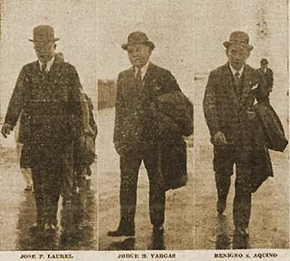

|
j
a v a s c r i p t |
October 1, 1943

Tokyo or Bust
Laurel, Vargas and Aquino are in Tokyo, at Tojo's invitation, for "consultations." A Tribune picture shows them dressed formally with black overcoats and derbies. Laurel looks like Tojo, Vargas looks like an old man, and Aquino like his first ancestor. Someone remarked: "Hell, they look like Japs already." Colonel Nagahama, who resides in our street, writes an open letter to guerrilleros — "Brothers ... of one race ... from one bloodstream." He gives his word of honor, a 100% guarantee, and swears to God (not the Emperor) that their lives will be spared if they surrender. Squibs follow up in their usual way. The Japanese claim the Americans bombed Wewak with 160 planes: "Japanese planes suffered no damage but some loss was suffered by ground facilities." I believe this is the now famous raid on Wewak I heard today — the U.S. used 400 planes including fighters, destroyed 56 bombers and caused one terrific explosion on the ground. KZRH is looking for more radio announcers. "Attention will be paid as to whether or not the applicants are sharply intelligent and possess the courage of their audience both here and abroad." Besides courage, they'll need a strong stomach to broadcast the tripe they'll be asked to. When Japanese civilians arrived to manage the foreign firms that were taken over, they were astonished to find that their Army and Navy managed to destroy or misplace all important records, documents, ledgers and accounts of firms like International Harvester, Philippine Education, and Marsman Trading. I heard someone was able to retrieve an uncancelled share certificate belonging to Theo Rogers. He found it in a Japanese office, partly mutilated, a busy Japanese sharpening his penmanship on the reverse side. Now facing the death penalty after allegedly shooting the two Japanese in a carromata last June and the officer in Santa Mesa, is one Crescendo G. Reyes, 22. The ex-USAFFE man escaped capture at Bataan and led a one-man-war against the Japanese here. |
|
|
|
|